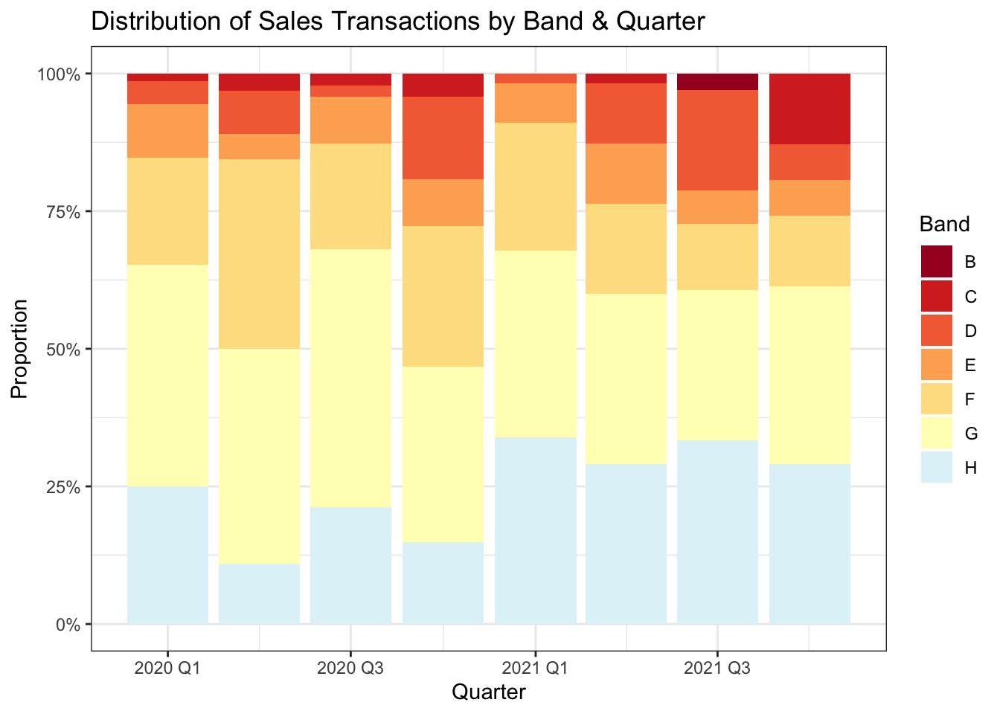

Bootstraps & Bandings

Are the residential property bands of 3 decades ago becoming less so? Would a sample of those recently-sold reveal band convergence? And what may be inferred about those not sampled?
Over the years, urban properties have been added to and divided up. And two streets of equal attractiveness, and with equivalently-banded properties, may have diverged as neighbourhoods evolved.
Whilst properties can and do move to higher or lower bands following alteration, would a sample of those recently-sold reveal band convergence after so long? And what may be inferred about the wider housing stock?
Setting the theme and colour palette for all graphics (with a little help from the ggfx package).
theme_set(theme_bw())
col <- "RdYlBu"
scale_fill_continuous <- \(...) scale_fill_distiller(palette = col)
cols <- brewer.pal(7, col)
tibble(x = 1, y = 1, fill = 7:1) |>
ggplot(aes(x, y, fill = fill)) +
as_reference(geom_col(show.legend = FALSE), id = "cols") +
with_blend(
geom_text(
x = 1,
y = 3.5,
label = col,
size = 40,
fontface = "bold"
),
bg_layer = "cols",
blend_type = "atop",
flip_order = TRUE,
id = "text"
) +
with_outer_glow("text", colour = "white") +
scale_fill_continuous() +
coord_flip() +
theme_void()Property band and price-paid data are separately sourced. The free-form street address is the only way to bring the two together. The structure, content and even spelling of the address sometimes differ, for example: “FLAT C, 22 SOME STREET, SOME AREA, SW10 1AA” in one may be “22C 2ND FLR, HOUSE NAME, SOME STREET SW10 1AA” in the other.
So, a little string manipulation is needed to create a common key. And reusable patterns will enable a consistent application to both.
Regex is used here to isolate pieces of text:
-
, London, SW10 .+$finds for example, London, SW10 0STand all otherSW10postcodes. See the difference by comparing the data frameband_df( before) withband_df2(after). -
(1ST|2ND|3RD|4TH|5TH|6TH) FLRdoes the same for floor numbers irrespective of whether it’s the 1ST or 2ND etc. -
(?<=COURT|WALK).*uses a positive lookbehind to find anything following the wordCOURTorWALK(since the postcode is stored in a separate variable and already isolates the road, the road name is redundant). -
^([0-9]{1,3})([A-Z])(?= .*)and\\2 \\1makes use of capture groups to temporarily memorise a number (capture group 1) followed by a letter (capture group 2), then swap them around. This is because a flat number may beC22in one dataset and22Cin the other.
remove_pattern <-
str_c(
", London, SW10 .+$",
"FLAT ",
"APARTMENT ",
"CHELSEA HARBOUR",
"(?<=COURT|SANDHILLS| HOUSE|WALK|ESTATE|ROW).*",
"[,'\\.]",
"(?<= )AT ",
"(?<=VINT)N",
"(?<=FARRIER)S",
"(1ST|2ND|3RD|4TH|5TH|6TH) FLR ",
"FLR (1ST|2ND|3RD|4TH|5TH|6TH) ",
" ?- ?[0-9]{1,3}",
sep = "|"
)
swizzle_from <- "^([0-9]{1,3})([A-Z])(?= .*)"
swizzle_to <- "\\2 \\1"Council Tax band data are available for non-commercial use1.
url1 <-
str_c(
"https://www.tax.service.gov.uk/",
"check-council-tax-band/",
"search-council-tax-advanced?",
"postcode=Fkvms5WVQum-uX3L00_pcA&",
"filters.councilTaxBands="
)
url2 <- "&filters.propertyUse=N&postcode=Fkvms5WVQum-uX3L00_pcA&page="
url3 <- "&filters.bandStatus=Current"
index <- crossing(band = LETTERS[1:8], page = seq(0, 120, 1))
band_df <- map2(index$band, index$page, possibly(\(i, j) {
str_c(url1, i, url2, j, url3) |>
read_html() |>
html_element("#search-results-table") |>
html_table(convert = FALSE)
}, otherwise = NA_character_)) |>
list_rbind()band_df2 <-
band_df |>
clean_names() |>
mutate(postcode = str_extract(address, "SW10 .+$"),
raw_band_address = str_remove(address, ", London, SW10 .+$"),
address = str_remove_all(address, remove_pattern),
address = str_replace(address, swizzle_from, swizzle_to),
address = str_squish(address)
)House price-paid data are similarly available for non-commercial use2.
endpoint <- "https://landregistry.data.gov.uk/landregistry/query"
query <- '
PREFIX xsd: <http://www.w3.org/2001/XMLSchema#>
PREFIX text: <http://jena.apache.org/text#>
PREFIX ppd: <http://landregistry.data.gov.uk/def/ppi/>
PREFIX lrcommon: <http://landregistry.data.gov.uk/def/common/>
SELECT ?ppd_propertyAddress ?ppd_transactionCategory ?ppd_transactionDate ?ppd_pricePaid ?ppd_estateType ?ppd_propertyAddressCounty ?ppd_propertyAddressDistrict ?ppd_propertyAddressLocality ?ppd_propertyAddressPaon ?ppd_propertyAddressPostcode ?ppd_propertyAddressSaon ?ppd_propertyAddressStreet ?ppd_propertyAddressTown ?ppd_propertyType ?ppd_recordStatus
WHERE
{ { ?ppd_propertyAddress
text:query ( lrcommon:postcode "( SW10 )" 3000000 ) .
?item ppd:propertyAddress ?ppd_propertyAddress ;
ppd:transactionCategory ppd:standardPricePaidTransaction ;
ppd:transactionDate ?ppd_transactionDate ;
ppd:pricePaid ?ppd_pricePaid ;
FILTER ( ?ppd_transactionDate >= "2020-01-01"^^xsd:date )
}
OPTIONAL{ ?item ppd:estateType ?ppd_estateType }
OPTIONAL{ ?ppd_propertyAddress lrcommon:county ?ppd_propertyAddressCounty}
OPTIONAL{ ?ppd_propertyAddress lrcommon:district ?ppd_propertyAddressDistrict}
OPTIONAL{ ?ppd_propertyAddress lrcommon:locality ?ppd_propertyAddressLocality}
OPTIONAL{ ?ppd_propertyAddress lrcommon:paon ?ppd_propertyAddressPaon}
OPTIONAL{ ?ppd_propertyAddress lrcommon:postcode ?ppd_propertyAddressPostcode}
OPTIONAL{ ?ppd_propertyAddress lrcommon:saon ?ppd_propertyAddressSaon}
OPTIONAL{ ?ppd_propertyAddress lrcommon:street ?ppd_propertyAddressStreet}
OPTIONAL{ ?ppd_propertyAddress lrcommon:town ?ppd_propertyAddressTown}
OPTIONAL{ ?item ppd:propertyType ?ppd_propertyType }
OPTIONAL{ ?item ppd:recordStatus ?ppd_recordStatus }
BIND(ppd:standardPricePaidTransaction AS ?ppd_transactionCategory)
}'
prices_list <- SPARQL(endpoint, query)prices_df2 <-
prices_list$results |>
as_tibble() |>
clean_names() |>
rename_with(~ str_remove_all(., "ppd_|property_address_")) |>
mutate(
transaction_date = new_datetime(transaction_date) |> as_date(),
price_paid = price_paid / 1000000
) |>
filter(transaction_date < "2022-01-01") |>
mutate(
raw_price_address = str_c(str_replace_na(saon, ""),
paon, street, sep = " ") |> str_squish(),
address = str_remove_all(raw_price_address, remove_pattern),
address = str_replace(address, swizzle_from, swizzle_to)
) |>
select(
address,
raw_price_address,
postcode,
price_paid,
transaction_date,
estate_type,
property_type,
transaction_category
)Now there’s a common key to join the data.
As with previous posts Digging Deep and House Sales, I’m focusing on postcodes in the SW10 part of London.
It’s not possible to assess all SW10 properties by band since only a tiny fraction will have been sold recently. Recent sales could though be used as a sample and Bootstrap Confidence Intervals then employed to draw a wider inference.
“Pulling yourself up by your bootstraps” originally meant doing something absurd. Later it came to mean succeeding with only what you have at your disposal. Hence only the sample will be used as a surrogate for the true population by making repeated random draws from it (with replacement).
A key assumption is that the sample is representative of the true population.
Even though only recent sales transactions have been selected, a small movement in market prices will have occurred. So ensuring the bands are reasonably well distributed over the period is worthwhile.
joined_df |>
select(transaction_date, price_paid, council_tax_band) |>
mutate(yearquarter = yearquarter(transaction_date)) |>
count(yearquarter, council_tax_band) |>
ggplot(aes(yearquarter, n, fill = council_tax_band)) +
geom_col(position = position_fill()) +
scale_x_yearquarter() +
scale_y_continuous(labels = label_percent(1)) +
scale_fill_manual(values = cols[c(1:7)]) +
labs(
title = "Distribution of Sales Transactions by Band & Quarter",
x = "Quarter", y = "Proportion", fill = "Band"
)
A violin plot of the property values by band shows some bimodal distribution and oddly shows bands E & F with lower mean prices than band D. This is worth closer inspection to ensure the sample is representative.
labels <- joined_df |>
summarise(n = n(), mean_price = mean(price_paid),
.by = council_tax_band)
transactions <-
joined_df |>
count() |>
pull()
from <- joined_df |>
summarise(min(transaction_date) |> yearquarter()) |>
pull()
to <- joined_df |>
summarise(max(transaction_date) |> yearquarter()) |>
pull()
joined_df |>
ggplot(aes(council_tax_band, price_paid)) +
geom_violin(fill = cols[1]) +
geom_label(aes(label = glue(
"n = {n} \nAvg Price ",
"{dollar(mean_price, prefix = '£', suffix = 'm', accuracy = 0.01)}"
), y = 16),
data = labels, size = 2.3, alpha = 0.7, fill = "white"
) +
scale_y_log10(labels = label_dollar(
prefix = "£",
suffix = "m", accuracy = 0.1
)) +
labs(
title = "Droopy Bandings",
subtitle = glue(
"Sample of {transactions} Property ",
"Transactions in SW10 ({from} to {to})"
),
x = "Council Tax Band", y = "Sale Price (log10 scale)",
caption = "Sources: tax.service.gov.uk & landregistry.data.gov.uk"
)
It turns out that the unusual transactions below £0.3m are almost entirely from one postcode as shown below when isolating “SW10 0JR”. This appears to be a single large new development with all sub-units sold in 2020.
These specific transactions feel somewhat unusual at these banding levels. And irrespective of their accuracy, a sample of 169 postcodes heavily dominated by the transactions of just one would not be representative of the true population.
joined_df2 |>
ggplot(aes(council_tax_band, price_paid, fill = `SW10 0JR`)) +
geom_violin() +
geom_label(aes(label = glue(
"n = {n} \nAvg Price\n",
"{dollar(mean_price, prefix = '£', suffix = 'm', accuracy = 0.01)}"
), y = 16),
data = labels, size = 2.3, alpha = 0.7, fill = "white"
) +
geom_hline(yintercept = 0.3, linetype = "dashed") +
scale_y_log10(labels = label_dollar(
prefix = "£",
suffix = "m", accuracy = 0.1
)) +
scale_fill_manual(values = cols[c(1, 5)]) +
labs(
title = "Unusual Bandings",
subtitle = glue(
"Sample of {transactions} Property ",
"Transactions in SW10 ({from} to {to})"
),
x = "Council Tax Band", y = "Sale Price (log10 scale)",
caption = "Sources: tax.service.gov.uk & landregistry.data.gov.uk"
)joined_df2 |>
count(postcode, sort = TRUE) |>
slice_head(n = 10)| postcode | n |
|---|---|
| SW10 0JR | 79 |
| SW10 0HQ | 10 |
| SW10 0AA | 7 |
| SW10 0HG | 6 |
| SW10 9AD | 6 |
| SW10 9JP | 6 |
| SW10 0DD | 5 |
| SW10 0UY | 5 |
| SW10 9BT | 5 |
| SW10 9JR | 5 |
So, I’ll remove this postcode.
joined_df3 <- joined_df |>
filter(postcode != "SW10 0JR")This now feels like a representative sample of 312 property transactions. And broadly-speaking the plot shows a progression in average property values as we step through the bands. There is though substantial convergence between some, with the “drippy” band E still looking almost indistinguishable from band D.
labels <- joined_df3 |>
summarise(n = n(), mean_price = mean(price_paid),
.by = council_tax_band)
transactions <-
joined_df3 |>
count() |>
pull()
joined_df3 |>
ggplot(aes(council_tax_band, price_paid)) +
geom_violin(fill = cols[1]) +
geom_label(aes(label = glue(
"n = {n} \nAvg Price ",
"{dollar(mean_price, prefix = '£', suffix = 'm', accuracy = 0.01)}"
), y = 16),
data = labels, size = 2.3, alpha = 0.7, fill = "white"
) +
scale_y_log10(labels = label_dollar(prefix = "£",
suffix = "m", accuracy = 0.1)) +
labs(
title = "Drippy Bandings",
subtitle = glue(
"Sample of {transactions} Property ",
"Transactions in SW10 ({from} to {to})"
),
x = "Council Tax Band", y = "Sale Price (log10 scale)",
caption = "Sources: tax.service.gov.uk & landregistry.data.gov.uk"
)
Can we infer that the true population of band Es no longer exhibits any difference in mean values with respect to band D?
bands_ef <-
joined_df3 |>
filter(council_tax_band %in% c("E", "D"))
obs_stat <-
bands_ef |>
specify(price_paid ~ council_tax_band) |>
calculate(stat = "diff in means", order = c("E", "D")) |>
pull()
set.seed(2)
boot_dist <-
bands_ef |>
specify(price_paid ~ council_tax_band) |>
generate(reps = 2000, type = "bootstrap") |>
calculate(stat = "diff in means", order = c("E", "D"))
perc_ci <- get_ci(boot_dist)
lower <- perc_ci |>
pull(lower_ci) |>
dollar(prefix = "£", suffix = "m", accuracy = 0.01)
upper <- perc_ci |>
pull(upper_ci) |>
dollar(prefix = "£", suffix = "m", accuracy = 0.01)
boot_dist |>
visualise() +
shade_confidence_interval(
endpoints = perc_ci,
color = cols[6], fill = cols[3]
) +
geom_vline(xintercept = obs_stat, linetype = "dashed", colour = "white") +
annotate("label",
x = -0.12, y = 350, size = 3,
label = glue(
"Observed Difference\nBetween Bands D & E is ",
"{dollar(obs_stat, prefix = '£', suffix = 'm', accuracy = 0.01)}"
)
) +
scale_x_continuous(labels = label_dollar(
prefix = "£",
suffix = "m", accuracy = 0.1
)) +
labs(
subtitle = glue(
"95% Confident the Difference ",
"in Mean Prices Between Bands D & E is {lower} to {upper}"
),
x = "Difference in Means", y = "Count",
caption = "Sources: tax.service.gov.uk & landregistry.data.gov.uk"
)
Bootstrapping with a 95% confidence interval suggests the true difference in mean prices between all band D and E properties in SW10 is somewhere in the range -£0.10m to £0.10m. Considerable convergence compared to 3 decades ago when the band E minimum exceeded the band D maximum.
R Toolbox
Summarising below the packages and functions used in this post enables me to separately create a toolbox visualisation summarising the usage of packages and functions across all posts.
| Package | Function |
|---|---|
| RColorBrewer | brewer.pal[1] |
| SPARQL | SPARQL[2] |
| base | c[6]; factor[1]; library[12]; max[1]; mean[2]; min[1]; readRDS[1]; saveRDS[1]; scale[3]; seq[1]; set.seed[2] |
| clock | as_date[1] |
| dplyr | filter[4]; across[1]; arrange[1]; count[4]; if_else[1]; inner_join[1]; mutate[7]; n[2]; pull[7]; relocate[1]; rename_with[1]; select[4]; slice_head[1]; slice_sample[1]; summarise[4] |
| ggfx | as_reference[1]; with_blend[1]; with_outer_glow[1] |
| ggplot2 | aes[8]; annotate[1]; coord_flip[1]; geom_col[2]; geom_hline[1]; geom_label[3]; geom_text[1]; geom_violin[3]; geom_vline[1]; ggplot[5]; labs[5]; position_fill[1]; scale_fill_distiller[1]; scale_fill_manual[2]; scale_x_continuous[1]; scale_y_continuous[1]; scale_y_log10[3]; theme_bw[1]; theme_set[1]; theme_void[1] |
| glue | glue[9] |
| infer | calculate[2]; generate[1]; get_ci[1]; shade_confidence_interval[1]; specify[2]; visualise[1] |
| janitor | clean_names[2] |
| purrr | list_rbind[1]; map2[1]; possibly[1] |
| rvest | html_element[1]; html_table[1]; read_html[1] |
| scales | dollar[6]; label_dollar[4]; label_percent[1] |
| stringr | str_c[4]; str_extract[1]; str_remove[1]; str_remove_all[4]; str_replace[2]; str_replace_na[1]; str_squish[2] |
| tibble | as_tibble[1]; tibble[1] |
| tidyr | crossing[1]; fill[1] |
| tsibble | scale_x_yearquarter[1]; tsibble[1]; yearquarter[3] |
| vctrs | new_datetime[1] |
Footnotes
This data is licensed under the Open Government Licence v3.0.↩︎
Contains HM Land Registry data © Crown copyright and database right 2021. This data is licensed under the Open Government Licence v3.0.↩︎